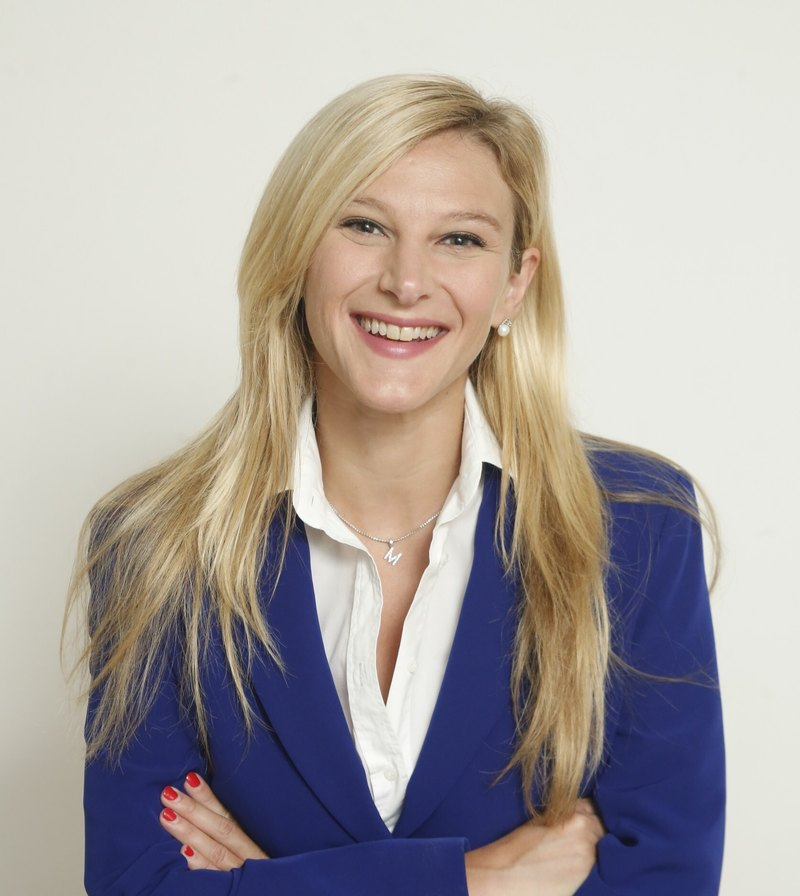

Meet the Trinity AI XR Hub Team
Get to know the people who bring the Hub to life. Our team combines academic expertise, creative problem solving, and a shared commitment to helping learners build the human skills needed for the future of work.
Hub Directors

Professor Na Fu
Director, Trinity AI XR Innovation Hub
Chair of Responsible Leadership and Fellow, Trinity Business School
Director of the Trinity AI XR Hub and Chair of Responsible Leadership at Trinity College Dublin. Her work spans a Fellowship of Trinity and CIPD, co-direction of the Trinity Centre for Digital Business and Analytics, and leadership of Sustainable Business, HRM and Leadership.
Dr Laura Berry
Manager, Trinity AI XR Innovation Hub
Assistant Professor of Digital Marketing and AI
Manager of the Trinity AI XR Hub, Assistant Professor of Digital Marketing & AI, and Academic Director of the MSc in Digital Marketing Strategy. Her work integrates research, education and practice across digital marketing, artificial intelligence, and strategy.
Core Team
The core team brings energy, personality, and a lot of fun to the Trinity AI XR Hub. They support sessions, help students feel at ease in VR, and keep the Hub running with style.
Denni Cawley
Research Fellow
Denni Cawley is a Research Fellow at the Trinity AI XR Hub. Her PhD research focuses on AI readiness and management education, exploring how organisations can navigate technological change and build capabilities for innovation.
Dr Chang Sheng Leong
Researcher
Chang Sheng is a researcher and a member of the AI XR Hub team at Trinity Business School. With a background in medicine, public health, and healthcare leadership and management, his work explores human–technology interaction, AI, immersive learning and digital transformation.
José Antonio Flaque García
Hub Assistant
José recently completed his MSc in Human Resource Management and has experience in consulting. He is particularly interested in technology and exploring how AI and immersive technologies can shape learning and professional development.

LinkedInMargherita Mura
PhD Researcher & Teaching Assistant
Margherita Mura is a PhD researcher and Teaching Assistant at Trinity, and a doctoral member of the Trinity Centre for Digital Business & Analytics. Her research focuses on digital-driven business model innovation, corporate governance, and strategy in cultural and creative organisations.
Advisory Group
Get in Touch
Sessions · Partnerships · Research Collaborations